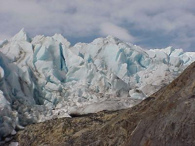
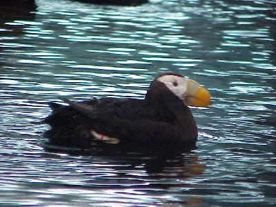
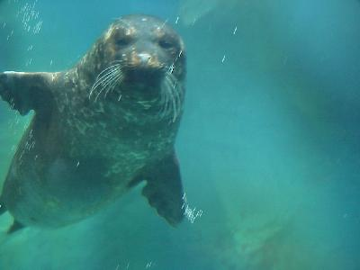
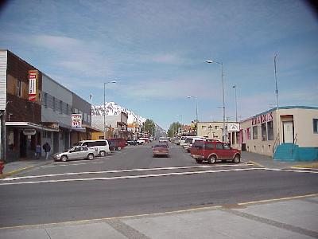
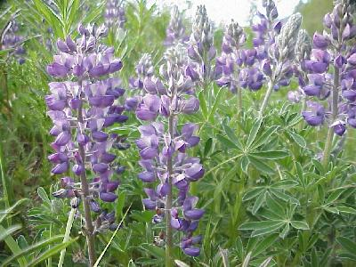

June 7, 6027 miles
| Our trip back to Anchorage, so we can drop Merry Lou off at the airport, begins today. But before we leave Seward we are planning a trip to Exit Glacier and just a little more sight seeing. | |
| Exit Glacier is another of the glaciers you can easily access here in Alaska. We had another wonderful day for hiking up to the glacier, the last bit of sight seeing in town, and our trip back to Anchorage. |  |
| Next we were off to get Sue her picture of a puffin, so here it is, as promised. |  |
| Now the truth on the Puffin, the picture was taken at the Alaska Sea Life Center Facility in Seward. The center serves as a wildlife research, rehabilitation, and education center. In addition to the puffins, there were numerous other sea life exhibits, including this seal. |  |
| Well, it is time to leave this nice little town behind us. |  |
| We had a great drive back to Anchorage, just a little wildlife, but fantastic views. The countryside was visibly greener on our trip back, even the lupines were in bloom. |  |
| Back in Anchorage we had a chance to sit
back and relax for a few seconds, and head off for dinner,
before we had to get Merry Lou off to the Airport. Wildlife for the day (exclusive of our trip to Alaska Sea Life Center Facility) was: black bear (4); mountain goats (4); and bald eagles (10). Milage for the day: 163 miles - yet another short day. |
|